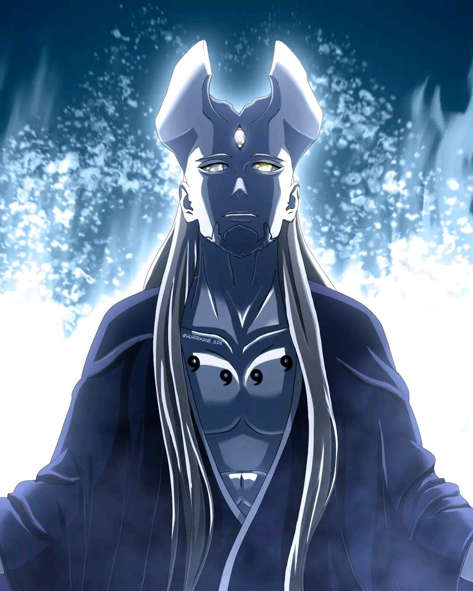
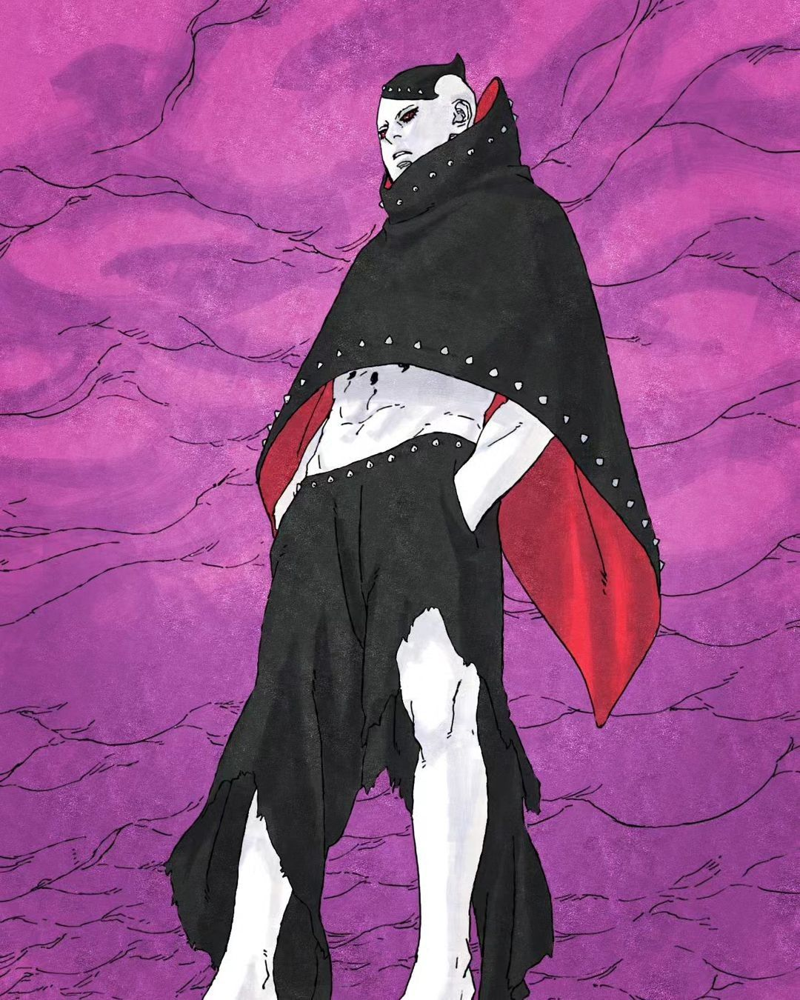
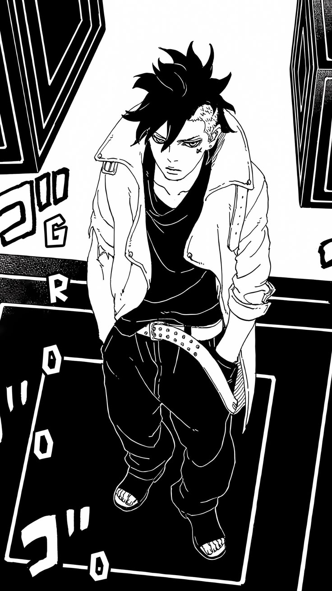

Boruto Two Blue Vortex
Primeira capa do mangá

Acompanha Boruto, filho de Naruto, que inicialmente rejeita o legado do pai, mas busca seu próprio caminho ninja ao lado de Sarada e Mitsuki.
A trama evolui de missões simples para ameaças de nível Otsutsuki, como Momoshiki e Isshiki, além da organização Kara. Em Two Blue Vortex, Boruto se torna um fugitivo após uma alteração na realidade.





Em Boruto: Two Blue Vortex, a realidade foi alterada fazendo todos acreditarem que Kawaki é o filho do Naruto, enquanto Boruto é visto como inimigo. Ele se torna um fugitivo e treina por 3 anos.
Quando retorna, está muito mais forte e protege a vila escondido. Surgem novos inimigos poderosos, como os Shinju, incluindo Jura.
Sasuke é derrotado e capturado. Boruto luta nas sombras para salvar todos, mesmo sendo considerado vilão.